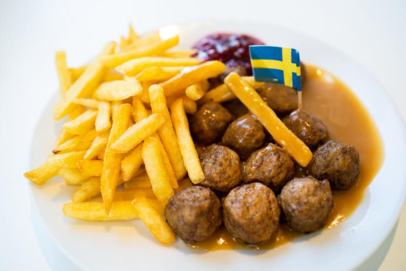

İsveç'in Yemek Kültürü
İsveç, kuzeyin soğuk iklim koşullarına rağmen, zengin ve çeşitli yemek kültürü ile dikkat çekmektedir. Ülke, tarihsel süreç içinde yerel kaynakların, deniz ürünlerinin, tarım ürünlerinin ve modern gastronomi anlayışının harmanlandığı bir mutfak geleneği geliştirmiştir. Bu kültür, hem geleneksel lezzetlerin hem de yenilikçi ve sürdürülebilir mutfak anlayışının izlerini taşımaktadır.
Geleneksel İsveç Mutfağı
Geleneksel İsveç yemekleri, yüzyıllar boyunca şekillenen yerel geleneklerden beslenmektedir. Köttbullar (İsveç köfteleri), gravlax (şeker ve tuzla marine edilmiş somon) ve sill (turşu ringa balığı) gibi yemekler, İsveç'in en bilinen lezzetleri arasında yer alır. Bu yemekler, özellikle aile toplantılarında, resmi kutlamalarda ve bayram sofralarında sıklıkla sunulmaktadır. Ayrıca, yöresel ekmek çeşitleri, knäckebröd (ince ve gevrek ekmek) gibi ürünler de geleneksel mutfağın vazgeçilmez unsurlarındandır.
Doğal ve Yerel Ürünlerin Rolü
İsveç mutfağı, doğal ve yerel ürünlerin kullanımına büyük önem verir. Ülkenin geniş ormanları, berrak suları ve verimli tarım arazileri, taze sebze, meyve, balık ve et ürünlerinin bulunmasını sağlar. Bu durum, İsveç yemek kültüründe "mevsimsellik" ve "sürdürülebilirlik" kavramlarının ön plana çıkmasına yol açmıştır. Yerel üreticilerden temin edilen malzemeler, hem lezzetin hem de sağlığın korunmasına hizmet ederken, modern gastronomi anlayışıyla da uyumlu hale getirilmektedir.
Modern Gastronomi ve Yeni Nordic Akımı
Geleneksel lezzetlerin yanı sıra, İsveç modern gastronomisi de dünya çapında ün kazanmıştır. Yeni Nordic Akımı olarak bilinen bu yaklaşım, yerel ve doğal ürünlerin yaratıcı şekilde kullanılmasıyla öne çıkar. İsveçli şefler, yerel malzemeleri global mutfak teknikleriyle harmanlayarak, hem görsel hem de tat açısından çarpıcı yemekler ortaya koymaktadır. Bu yenilikçi mutfak anlayışı, sağlıklı beslenme ve çevre dostu üretim ilkeleriyle de uyum içerisindedir.
Fika Kültürü: Sosyal Bir Ritüel
İsveç'in yemek kültürünün belki de en sevilen ve en sosyal yönlerinden biri, fika kültürüdür. Fika, sadece bir kahve molası değil, aynı zamanda insanları bir araya getiren, sohbetin, dostluğun ve dinlenmenin simgesidir. Fika sırasında genellikle kahve eşliğinde kaneli çörekler, kurabiyeler veya hafif tatlılar tüketilir. Bu ritüel, iş yerlerinden evlere, kafe ve restoranlardan park banklarına kadar her yerde kendini göstermekte, İsveçli yaşam tarzının vazgeçilmez bir parçası haline gelmiştir.
Sağlıklı ve Dengeli Beslenme Yaklaşımları
İsveç mutfağı, sağlıklı ve dengeli beslenmeyi teşvik eden bir yapıya sahiptir. Geleneksel yemeklerde kullanılan taze ve doğal malzemeler, modern beslenme trendleriyle uyumlu hale getirilmiştir. Özellikle organik tarım ürünleri ve doğal kaynaklardan elde edilen gıdalar, İsveçli tüketicilerin tercihleri arasında yer alır. Bu durum, hem bireysel sağlık hem de çevresel sürdürülebilirlik açısından büyük önem taşımaktadır. İsveç'te, beslenme kültürü; kalori kontrolü, dengeli makro ve mikro besin alımı ve yerel üretimin desteklenmesi gibi prensiplerle şekillenmektedir.
Uluslararası Etkiler ve Kültürel Çeşitlilik
Globalleşme çağında, İsveç yemek kültürü de uluslararası etkilerden nasibini almaktadır. Farklı göçmen topluluklarının ve uluslararası mutfakların etkisi, İsveç'in gastronomi sahnesinde çeşitliliği artırmaktadır. Geleneksel İsveç yemeklerinin yanı sıra, dünya mutfaklarından ilham alan modern restoranlar ve kafe zincirleri, bu çeşitliliği daha da zenginleştirmektedir. Böylece, İsveç'te yemek kültürü, hem yerel hem de küresel lezzetlerin buluştuğu dinamik bir platform olarak kendini göstermektedir.